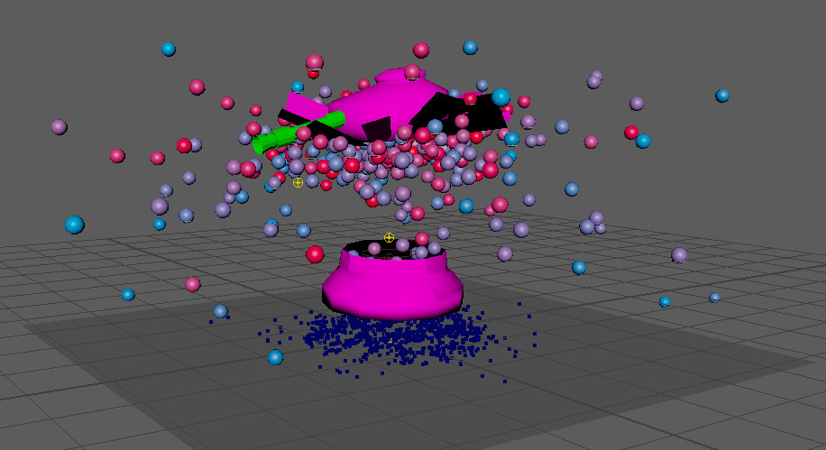

The videos below show the outcomes of the particle experiments, although the animations are quite slow due to how ncloth animations are processed in Maya I believe when these types of animations are rendered the use of other VFX software like Houdini to speed up the animation and add fire and other particles could create a very impressive explosion.
DEVELOPMENT
IMPLEMENTATION
Although this project is quite small it taught me a lot of new skills in Maya. I utilised emitters by producing hundreds of particles inside of the model setting their velocity high in the instance they spawn in to allow for a dramatic burst. One major problem I had was when the particles spawned they would just fall and not burst out of the model this was because of the gravity which comes with the nucleus pulling everything down, so during the animation the gravity is null allowing for objects to fly away then I keyframed the gravity attribute at the end of the animation to slowly come back creating the illusion of objects falling making for a more realistic animation.

Making the objects explode was utilised by making them ncloths and through that activating tearable constraint, it took a while to get the correct properties for the ripping animation, luckily Maya comes with some material presets so to start I used 75% softSheetMetal and 25% honey to allow the particles to rip through easily but also give a little bit of a bounce when they fall.
The explosion animation is very stylised, in my opinion, I believe this would work very well with a stop motion type animation where real-life effects may not be applicable.
